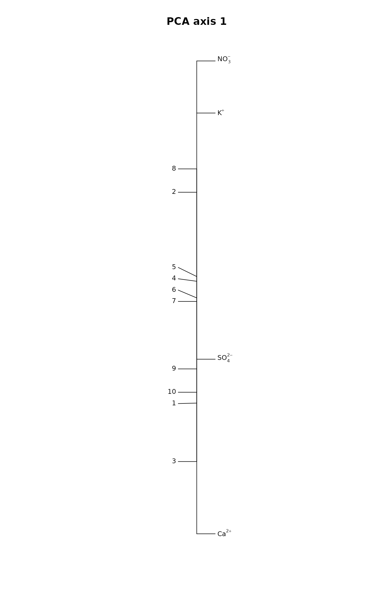
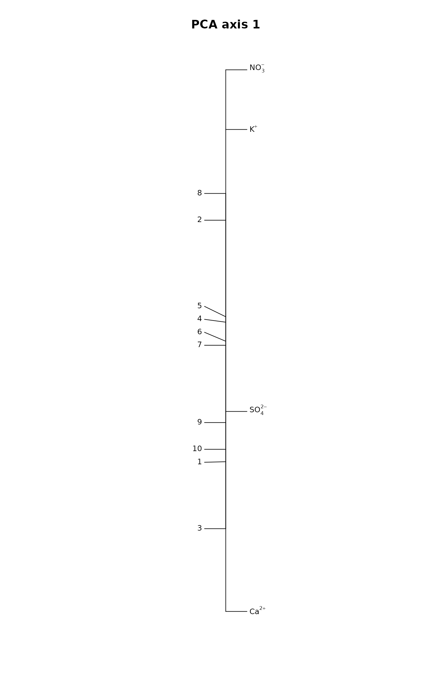

Plots One-dimensional Diagrams without Overwriting Labels
linestack.RdFunction linestack plots vertical one-dimensional plots for
numeric vectors. The plots are always labelled, but the labels
are moved vertically to avoid overwriting.
Usage
linestack(x, labels, cex = 0.8, side = "right", hoff = 2, air = 1.1,
at = 0, add = FALSE, axis = FALSE, ...)Arguments
- x
Numeric vector to be plotted.
- labels
Labels used instead of default (names of
x). May be expressions to be drawn withplotmath.- cex
Size of the labels.
- side
Put labels to the
"right"or"left"of the axis.- hoff
Distance from the vertical axis to the label in units of the width of letter “m”.
- air
Multiplier to string height to leave empty space between labels.
- at
Position of plot in horizontal axis.
- add
Add to an existing plot.
- axis
Add axis to the plot.
- ...
Other graphical parameters to labels.
Note
The function always draws labelled diagrams. If you want to have
unlabelled diagrams, you can use, e.g., plot,
stripchart or rug.
Examples
## First DCA axis
data(dune)
ord <- decorana(dune)
linestack(scores(ord, choices=1, display="sp"))
linestack(scores(ord, choices=1, display="si"), side="left", add=TRUE)
title(main="DCA axis 1")
 ## Expressions as labels
N <- 10 # Number of sites
df <- data.frame(Ca = rlnorm(N, 2), NO3 = rlnorm(N, 4),
SO4 = rlnorm(N, 10), K = rlnorm(N, 3))
ord <- rda(df, scale = TRUE)
### vector of expressions for labels
labs <- expression(Ca^{2+phantom()},
NO[3]^{-phantom()},
SO[4]^{2-phantom()},
K^{+phantom()})
scl <- "sites"
linestack(scores(ord, choices = 1, display = "species", scaling = scl),
labels = labs, air = 2)
linestack(scores(ord, choices = 1, display = "site", scaling = scl),
side = "left", add = TRUE)
title(main = "PCA axis 1")

## Expressions as labels
N <- 10 # Number of sites
df <- data.frame(Ca = rlnorm(N, 2), NO3 = rlnorm(N, 4),
SO4 = rlnorm(N, 10), K = rlnorm(N, 3))
ord <- rda(df, scale = TRUE)
### vector of expressions for labels
labs <- expression(Ca^{2+phantom()},
NO[3]^{-phantom()},
SO[4]^{2-phantom()},
K^{+phantom()})
scl <- "sites"
linestack(scores(ord, choices = 1, display = "species", scaling = scl),
labels = labs, air = 2)
linestack(scores(ord, choices = 1, display = "site", scaling = scl),
side = "left", add = TRUE)
title(main = "PCA axis 1")
